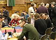
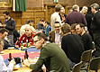

Also see leading a session.
Session formats
The Software Practice Advancement conference has a tradition of active participation. We encourage conference sessions that bring people together to work and learn and in most cases, many sessions are highly interactive, involving participants and session leaders on an equal footing. The types of session that typically make up the programme are described here, although if you are proposing a session and want to do something different, we always welcome new suggestions.
Workshop
75 or 150 minutes
Interactive, structured session in which participants work on a topic and normally produce in some conclusions (which are made available to other SPA participants) together with suggestions for avenues for further investigation.
Workshops may take many different forms and submitters are free to propose their own structure and process. It is very important that proposals are explicit about the process that will be followed.
Tutorial
75 or 150 minutes
A presentation on a clearly focussed topic aimed at a defined category of software professional. For example a tutorial could be aimed at experienced project managers, or at professionals actively working on object-oriented design projects.
You should have a clear idea of what insights your participants will take away, and why they will find these interesting. While tutorials are expected to contain a certain amount of formal lecturing, you should try to incorporate a degree of interaction between participants, for example by including a quiz or questionnaire.
Long Tutorial
Up to 330 minutes
A longer, interactive learning session on a clearly focussed topic, which will run on Sunday before the main conference begins. Contains formal lecturing, but must also incorporate practical exercises or interaction between participants.
Goldfish Bowl
Normally 75 minutes
A structured discussion format. Goldfish bowls generally require an initial seed group of four or five specially invited participants, with the rest of the participants beginning as the audience and then swapping in and out with the participants.
A goldfish bowl provides an effective means of exploring the breadth of opinion on a given topic. The session is started by a small discussion group of specially invited participants, with the rest of the participants forming an audience. Spare places in the discussion group are available, and members of the audience may take up these places when they feel they have a contribution to make. Members of the discussion group leave their places when they have had their say, making room for new participants. The session should produce documentary output of the conclusions reached, typically in the form of a poster.
Case Study
Normally 75 minutes
A case study session aims to describe real-life experiences and lessons learnt in implementing object technology. Discussion of failure as well as success is welcome.
The experiences described can be drawn from any aspect of object technology projects. Useful topics to address in a case study session would be: background to why object technology was used; report on the experience of using object technology; what went wrong and why; what went well and why; what lessons have been learnt from the experience.
Simulation
75 or 150 minutes
Reflection on or experimentation with complex real-world environments facilitated by means of a simulation, role-play or games.
Given the complexity of the real-world environment in which we practice software, it is often not possible to reflect clearly on the way we work or to expweriment with new approaches. Using simulations and games howwever allows us to think about these situations with increased clarity. A simulation leader will be responsible for producing a clear and concise summary of the purpose, rules, and assumptions of the game. Some work on reflecting on the results of the game and its implications for real-world practice should also be included. The output from the sessions is likely to include both summary results from the simulation and a summary of its real-world implications.
Think Tank
Normally 75 minutes
A small group of people meeting to solve a particular problem or to find an agreed position on some issue. Think-tank sessions are intensive, focused and produce concrete outputs.
Think tanks should produce concrete output in the form of a poster for other conference participants. The session leader is responsible for the process of the session, for any materials that may be needed, and for ensuring that the poster is produced.
Working Group
6 hours
A working group conducts a detailed exploration of some aspect of technology, to identify how that aspect of the technology can be advanced, and then to put in motion the work needed to achieve this advance. These normally take place on Sunday afternoon, before the main part of the conference and may require some pre-conference input from participants (for example submission of a position statement). Working groups are run to encourage the exchange of ideas between practitioners with the aim of generating or encouraging progress that is applicable to the software community at large. Groups may continue to meet during and after the conference.
One of the rooms at the conference will be furnished with comfortable sofas and wireless access, in order to create a relaxed atmosphere. While available for much of the time as an informal quiet area we also welcome innovative ideas for sessions to be run in this zone. These might include:
- Sofa Sessions - Laid-back chats, discussions and brain-storming on a pre-arranged topic.
- Virtual Sessions - A session taking place in virtual reality making use of the internet, participants’ laptops and the wireless network.
- On the Edge Sessions - Experiments in ways of working, interacting and transferring knowledge.
- Multi-Topic Sessions- Sessions that contain a number of topics, devoting a short time to each, in order to keep the level of energy and interest high throughout.